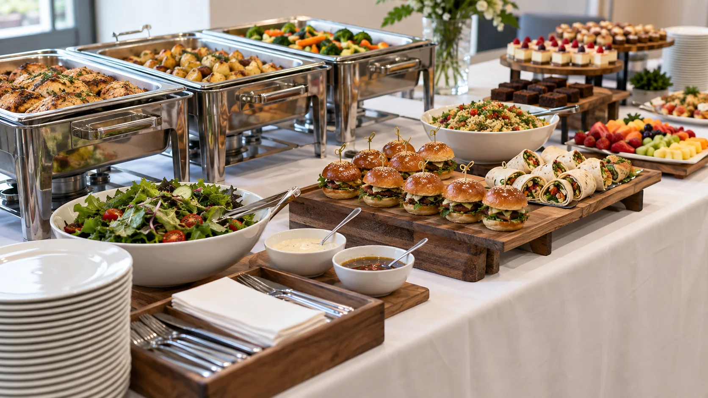
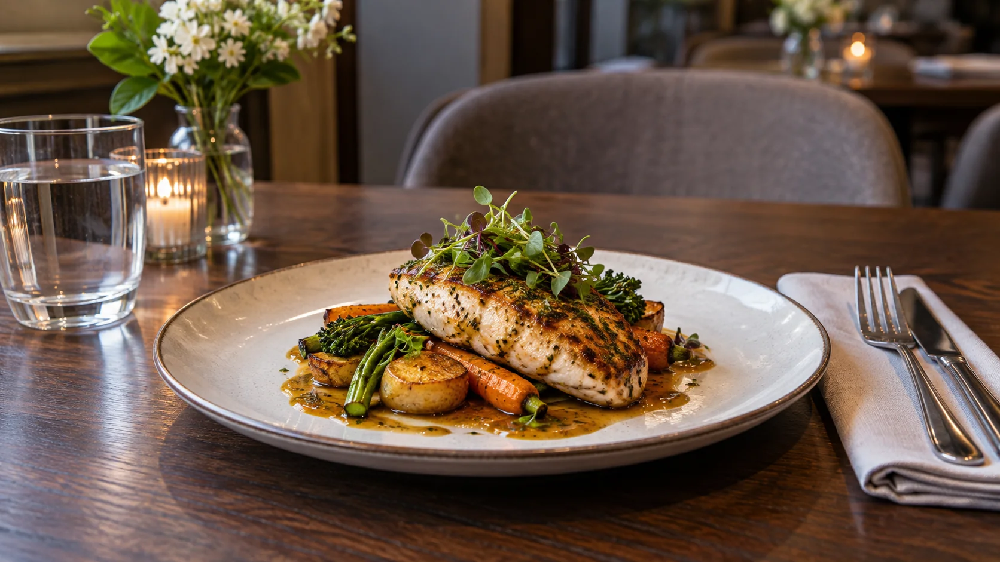
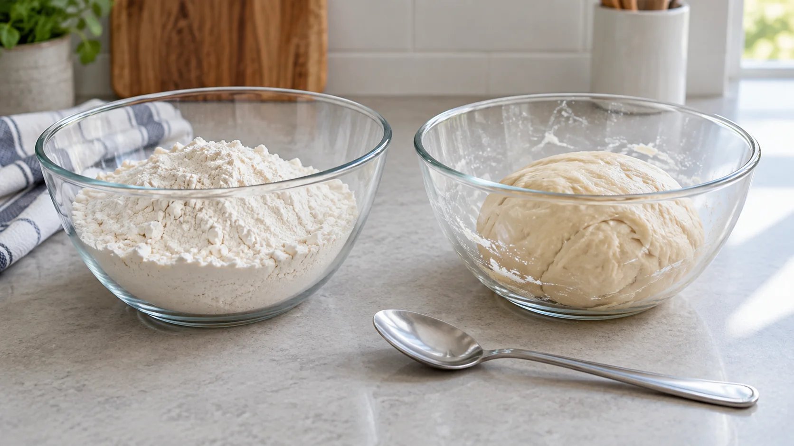

Module 4 of 4 · Term 4
Food Service and Catering
Compare service settings, plan menus and teamwork, and use food-property evidence to evaluate a catering solution.
Loading progress…

Notice: Where would a guest choose food, collect a plate and move next?
Open larger ↗{kind=link}
Module 4 PowerPoint
Use the matching slides to preview and review the three learning sections.
Section 4.1
Service settings and customers
Food service takes many forms; the customer, setting and service promise shape the operation.
A school canteen, café, restaurant, food truck and event caterer all provide food, but they solve different service problems. A canteen may need clear choices in a short break. A café may serve customers over a longer period. A caterer may prepare for a known function at another location. The setting affects menu size, how customers order, how food reaches them and which resources the team needs. It is too simple to call one model 'better'; judge how well it serves its intended customers.
A customer needs more than a product that looks appealing. They need accurate information, suitable choices, fair treatment and service that matches what was promised. Some people are choosing according to taste or budget; others need information about ingredients or allergens. NSW Food Authority guidance says food businesses must provide required allergen information for their food, including unpackaged food. A service team should communicate clearly and refer uncertain questions to the person who can verify the information. Guessing from a dish name or reassuring someone without evidence is unsafe. Class activities still follow the teacher's local safety and supervision directions.
Service depends on connected roles. 'Back of house' commonly describes food preparation and kitchen support, while 'front of house' describes customer contact and service. Management coordinates decisions, staffing and standards, but the boundary between roles can change in a small operation. A food truck worker, for example, may both prepare and serve. Handover matters: a customer request must reach the people making or selecting the food, and a change to an item must reach those describing it to customers. Good communication protects both the customer experience and the team's ability to work.
To compare ventures, look at evidence rather than labels. Record the type of customer, the service moment, menu range, ordering method, team roles, information supplied and likely constraints. Ask what the operation does well for its specific setting and what remains unknown. For example, a short menu may be a strength when customers have limited time, provided the available choices meet their needs. A useful comparison ends with a reasoned judgement that links a service feature to the customer it is meant to help.
Notice: What would a guest need to understand at this hand-off?
Open larger ↗{kind=link}

Notice: Where are choice and hand-off different in these two settings?
Open larger ↗{kind=link}
Compare a canteen serving students during a short break with a caterer serving a planned community event. The canteen may value quick, clear ordering; the caterer must coordinate a known group and service time. Neither comparison tells you what a particular local business actually offers without checking it.
Explore the evidence
Notice: Where does the guest ask questions and receive food in each setting?
Open larger ↗{kind=link}
Video candidate · final check pending
Food Allergies: Food allergen rules for business · NSWFoodAuthority

If the player is blank or unavailable, use the YouTube link or follow the non-video path below.
Watch for: What information does a customer need before ordering, and who can confirm it?
If you cannot watch: Compare the fictional counter-service and table-service menus in this section; identify the information contact point and questions staff must confirm.
See all course videos →Non-video pathway: observe two fictional service menus and service descriptions, then make a comparison table for customer, ordering, information and service constraints.
- Fictional counter-service menu: customers order at a counter, collect food and see an ingredient-information contact point. What does the customer need before ordering?
- Fictional table-service menu: staff take orders at tables and explain menu questions. How do the communication and staffing needs differ?
Open the posted catering study task ↗ (school access may be required)
Learning activity 4.1 · 10 questions + written response
Formative learning evidence. Choose an option to see feedback and use the help link if needed.
Written challenge
Compare two contrasting food service settings and judge how each responds to its customers.
Use these prompts to build one response:- Name the customer group, ordering method and service timeframe in each setting.
- Explain how menu range, staff roles and communication suit each setting.
- Evaluate one strength and one information gap or limitation in your comparison.
Use at least two developed sentences so this response counts towards your section progress.
Success looks like:- Uses matched criteria and specific service evidence rather than a simple personal preference.
- Explains how accurate customer information and team communication affect service quality.
Section 4.2
Menus, teams and costs
A catering menu succeeds when customer needs, team capacity and resources fit together.
A menu is a service plan as well as a list of foods. An à la carte menu lets customers choose separately priced items, while a set menu offers a defined combination or limited choices. Neither format is automatically suitable for every event. The number of diners, time available, service style, dietary needs and capacity of the team all influence the choice. A menu description should make choices understandable and provide a pathway for accurate ingredient and allergen information. Do not infer that a dish meets a dietary requirement from a fashionable name or an incomplete ingredient list.
Costs need more than the price of the main ingredient. A planner considers all ingredients, expected portions, packaging or service materials, labour and other running costs that apply to the setting. The amount charged is revenue, not automatically profit. If food is wasted or portions differ from the plan, costs per usable serving may rise. A simple comparison can ask which option gives suitable quality and value within a budget. The aim is not to invent prices for a real business; it is to explain what should be counted and how an estimate can be checked.
People and time are resources too. A workflow maps tasks in a useful order and identifies dependencies, such as what information must be confirmed before a menu can be finalised. Allocating responsibilities helps a team avoid duplicated work or gaps. A plan also needs communication points: who confirms guest numbers, who checks a change in ingredient information and who tells the service team? A schedule is only a prediction; if conditions change, the team needs to revise it and communicate the reason. Practical work must still follow current teacher directions and local safety procedures.
Evaluation asks whether the menu and workflow achieved the brief. Collect evidence about suitability, consistency, service timing, waste and customer feedback. Compare actual results with intended criteria rather than calling an item successful because it sold once. A smaller, coherent menu might reduce waste and help a team maintain quality, while an additional option might better meet a genuine customer need. A well-argued improvement explains this trade-off and states what information would test the revised plan.
Notice: Which costs and roles would need real information?
Open larger ↗{kind=link}
A hypothetical event team considers a short set menu and a longer choice menu. It compares guest suitability, the number of servings required, ingredient and service costs, staff capacity and likely waste. The team selects an approach only after checking the event brief and information available.
Explore the evidence
Notice: Which planning detail cannot be decided from this image alone?
Open larger ↗{kind=link}
Video gap · use the learning path below
The Term 4 teacher study task and Drive root contain no video for menu, team and cost decisions. Broad online catering clips found by search did not show a dependable match to the local brief or source-controlled decision sequence.
Focus question: Which information about guests, staffing and budget changes the menu and service choice?
If you cannot watch: Use the fictional 30-guest event brief and the section’s decision table; compare two service concepts, then list missing budget, equipment and dietary details.
See all course videos →Non-video pathway: use a fictional event brief to compare an à la carte and a set-menu proposal, then explain one trade-off and one information gap.
- Fictional event brief: 30 guests, mixed preferences and a limited service window; budget, venue equipment and dietary details have not yet been confirmed. Compare a set-menu concept with an à la carte concept, and list the missing decisions.
Learning activity 4.2 · 10 questions + written response
Formative learning evidence. Choose an option to see feedback and use the help link if needed.
Written challenge
Evaluate a hypothetical catering menu and workflow for a defined group, then justify one improvement.
Use these prompts to build one response:- State the customers, service time, menu format and known constraints.
- Explain how portion yield, at least two cost categories, team roles and accurate food information affect the plan.
- Compare two possible changes using suitability, service and waste evidence, and justify the better one.
Use at least two developed sentences so this response counts towards your section progress.
Success looks like:- Distinguishes revenue, costs and usable portions while explaining a realistic planning trade-off.
- Gives a specific improvement tied to customer needs, communication and evidence.
Section 4.3
Functional properties and review
Understanding what an ingredient does helps explain food quality and make a reasoned improvement.
An ingredient has more than a flavour. Its functional property is what it can do in a food system: help thicken, hold a mixture together, create a foam or affect structure and moisture. These functions help explain why a product changes during preparation. For example, starch can contribute to thickening when it takes up liquid and is heated, while egg proteins can set and help give structure. An emulsifier can help oil and water remain mixed. The exact result depends on the whole formula and process, so one ingredient name cannot predict a finished product by itself.
Functional properties differ from sensory characteristics. Function explains the ingredient's role and changes during production; sensory characteristics describe what people can see, smell, taste, hear or feel in the finished food. They connect: a change in structure may alter texture, and a change in moisture may alter mouthfeel. A useful explanation follows a chain: ingredient or process, property change, observable result, and whether that result suits the intended food. 'It tasted good' is feedback, but it does not explain why a texture changed.
A fair product comparison changes one planned factor at a time where possible and records the conditions and results. If a team changes the ingredient amount, heating time and serving temperature together, it cannot confidently say which caused the difference. Observations should be specific, such as whether a sauce held its shape or separated, rather than simply 'good' or 'bad'. The team should use only approved ingredients, equipment and procedures in practical lessons. This section explains the science for evaluation; it does not set a class recipe or authorise an unsupervised trial.
Reviewing a catering product joins science with service. The question is not just whether a sample works in isolation, but whether its texture, consistency, appearance and suitability can be maintained for the intended customers and service setting. Combine observations with feedback and the original brief. If a product is inconsistent, identify the most likely cause that the evidence supports, propose one change and explain how to test it. A careful review also states what remains uncertain. This is more useful than claiming a single observation proves a universal rule about an ingredient.
Notice: What changed, and what evidence explains it?
Open larger ↗{kind=link}

Notice: What process might explain the change, and what details remain unknown?
Open larger ↗{kind=link}
In a teacher-approved comparison of two hypothetical sauces, students would describe whether each stayed evenly mixed, note which single factor differed and relate the observation to the intended service. They could not claim an ingredient caused the change if several factors changed together.
Explore the evidence
Notice: What changed in texture, and which process details would you record?
Open larger ↗{kind=link}
Video gap · use the learning path below
The teacher-posted functional-properties recall has no video link. The American Egg Board has a relevant egg-foam demonstration, but its exact playable ID, embedding and audio could not be verified for this build; a product or general foaming clip cannot replace the section's controlled-observation judgement.
Focus question: Which visible texture difference is observed, and what must be controlled before explaining its cause?
If you cannot watch: Compare observation records A and B in this section; use the functional-properties visual to list the variables that must stay the same before judging the effect of mixing time.
See all course videos →Non-video pathway: analyse two fictional observation records, identify the changed variable and write a cautious cause-and-effect explanation with a remaining uncertainty.
- Observation record A: the ingredient was mixed for a short time and the finished food held less air; other conditions were not recorded.
- Observation record B: the same named ingredient was mixed longer and the finished food held more air; ask which variables must be controlled before claiming the mixing time caused the change.
Open the posted functional properties recall ↗ (school access may be required)
Learning activity 4.3 · 10 questions + written response
Formative learning evidence. Choose an option to see feedback and use the help link if needed.
Written challenge
Evaluate a hypothetical catering product whose texture changes during service, using functional-property reasoning and a fair plan for improvement.
Use these prompts to build one response:- Describe the observed texture or stability change and why it matters to the intended customers and service.
- Explain one plausible ingredient or process role, separating the functional property from the sensory result.
- Propose a teacher-approved controlled comparison, naming the factor to change, conditions to keep consistent and evidence to record.
Use at least two developed sentences so this response counts towards your section progress.
Success looks like:- Builds a clear ingredient-or-process to property to observable-result explanation with an acknowledged uncertainty.
- Justifies one testable improvement against the service brief without inventing a class recipe or safety procedure.
Review this module
These three checks sit after their learning sections. Revisit any one directly; your work stays saved on this device.
- Service settings and customersNot started
- Menus, teams and costsNot started
- Functional properties and reviewNot started